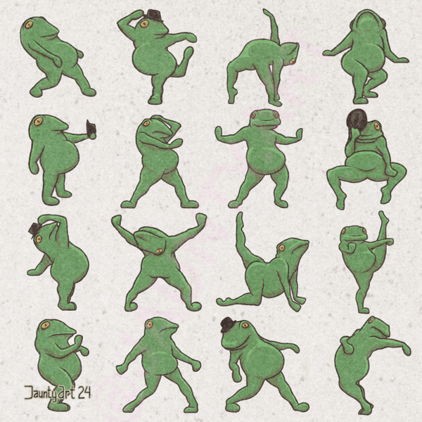

When I first saw Mr. Casey Crawford perform stand-up, it was near Fenway Park. Fitting because he belted out a hit joke, one after the other.
So, on Friday, September 20th, Casey continued to hit great jokes for a solid hour. Opener and host, Rob Crean performed tremendously, even a bit more expressive during his set than usual... probably thee excitement of the night 😎

Casey called his album, "Joke Writer" and it's all killer, no filler. One-liners for an hour... a comic said that's 3 jokes a minute... 180 jokes. Bandcamp for 9-10 bucks? 18 jokes from Boston Comedy winner and Jimmey Kimmel guest - @ 18 jokes a dollar. Dang. That's like nickel brews or somethin'. At the venue where we all had such a good time.... $10 PBRs. Casey should have joked about that by trademark diarrhea on mgmt's faces. 🏁 Great night of comedy. No, that's all. *But* I did hear a guy in a Jurassic Park shirt say there was an after-party at a comic's house nearby. So, that's fun. Then, a known kilt-wearer who had a sea-green beard told me he was goin' to party there while I waited an extra 30min at the bus stop 5min away. I didn't even go to her parties when I was her neighbor! See comics in the same scene when I'm also walking to buy beer. Uh, guess I don't see you. It really brings up my history with Boston comedy which is such a real treat. I said, I prefer being apart of the scene for over 15yrs and considered too much riffraff. Man, Casey's great.
The intel will point to a *consolidation of breweries. Jack's Abby (Framingham... not Pressingham) picked up wounded soldier Wormtown Brew of The WOO!cester Area. Dorchester Brewing morphed with Aeronaut, bringing Aeronaut's Everett location to Mass. Ave. in Southie.
To a large extent, the plateau reflects generational drinking habits. Craft beer rose to prominence as millennials reached legal drinking age. But they’re getting older, raising kids and cutting back on the late nights on the town. Gen Z seems to be much less interested in the latest super-hoppy IPA or double barrel aged stout. Brewers also say it’s no coincidence that their industry has stalled out as cannabis products have become more widely available.
"(Dan) Kenary (of S. Boston's Harpoon Brewert) said he noticed that regional craft brewers, relatively larger players that mostly sell through distributors, peaked roughly a decade ago. Microbrewers and taprooms continued to grow, but even those corners of the industry have lost their buzz. Kenary cofounded Harpoon, one of Massachusetts’ first craft brewers, and said he hoped to help stoke a vibrant beer culture in the United States. He and his peers succeeded 'beyond our wildest freaking dreams,'' Kenary said, and then rode the rising tide
*"line'em up, bro... diamond"

- "Of Pyramids and Ponzis" Bitcoin has value based on scarcity. The less of BTC, the more it's worth, i.e. The Halvening. Well, what makes a stock price go up in value? More demand than supply. So, low supply -> BTC Kenosha kastle. A share is part of a company and a token good for a company's service. Can you give Solana to an UberEats? That's a fast burger! And, no, you cannot.
- The formula of Volume + Equity + PP (price performance), if you were a computer run-time, the formula akins to tossing in thee flag -f 🤓 loll 💬 -ff "forced fundas"🖖 l33t. Only me? Famed economist John Maynard Keynes reported fundas have nothen to do with it! Like vegetables, fundamental stocks are good for the financial body and, also like your veggies, grow slowly. "Keynesian stocks" means popular, means buzzy, hype, abd means the Tulip Mania 🌷. A highly equitable stock that's been performing exceedingly well, with high volume... -fizzle out 🥤🐻
- Peter Lynch, of Fidelity Investments, has famous patience. While been less good than Famous Amos, Frere Pete would say to have good TAST. I used the formula above to buy cashtag $TAST. TBH, it slid 85%. 🛝🐩💩 Then, it went up 400% and got bought out. Dr. Stale's formula also led to $YPF, which also slid, then a gain +100%. I did not hold for the slide. So, LESSON LERRNED => possess mathmatical emotions, a calcu-soul.
- My Final Thoughts: (Volume + Equity + PP + P/B or P/S + ROA or ROE) = Energy companies & Banks! Equity & Price Performance don't matter as much... market will eat your prescription lunch (Keynes 🌷) Conviction! Peter Lynch! (Mutally exclusive) Take care of yourself... aaand your stonks.
Boston Beer Wars (BBW)
A sagging revolution, we consolidate & recollect on some wounded soldiers from circa 2012, and valiant Jacks of the '20s, all survivors of Beer Warz:
3 🆙
- Nite Shift - A consistent indie beer that doesn't need to say, "Mulligan" per every pack. Fresh taste with crisp finish like a fine, sparkling cigarette
- Harpoon - Old Faithful. "Be the '97 Camry you wish to see in the world.". Harp is Southie. Harp is Blue Hills Reservation. Harp is John Milton sneakin' in a growlet into AMC Braintree 🔟. Landlord's can't shut that down. Quality quality control and remaining relevant since... 🎂nineteen86🎂
- Cisco - A winning brewery, right? Try a Cisco Grey Lady for any time of year, any week you shower 🚿 Deluxe Bro.
3⬇️
- Allatrash - too dependent of an indie beer... QC of the bar tap, the 4pk, whimsy-dependant... I mean, the vibe's good for Allagash... if the Allasmash vibes back, and is good.
- Diddlehead - It's popular... Big ewskis! Aquiring a 12pk? BEWARE... roughly 25% will not please the pallette. Like an aisel w/ doo-doo on your brush. Fiddlehead: canned in Romania
- Who else is a poor show? YOU KNO! Get out there, kid; get out in the world and imbibe, snap coldsnaps, bingers, and necks... I mean it. 🧙🏻‍♂️🖕